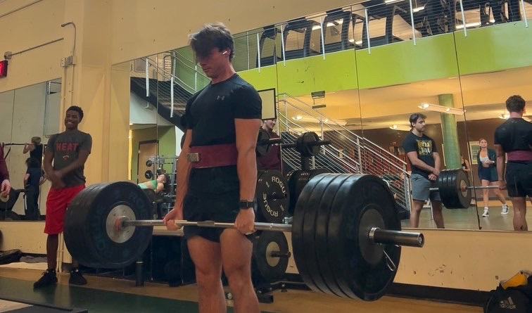

Soccer
One of my main passions since I was young was playing soccer. Not only does it provide good cardio, but the competitive nature of the game allows me to forget about all the stress in my life. I also get to meet new people with similar interests
Working out
Similar to soccer, going to the gym is a great escape from life. I started for others, but now I do it for myself. Going to the gym is as second nature as eating breakfast for me and I wouldn't want it any other way!
Hangout With Friends
Hangout with friends has been my favorite part of college so far. I was lucky enough to create a friend group with everyone on my floor in campus housing, and 2 years later we are still very close!
Rocket League
I've been playing rocket league pretty consistently since 2016. Though not neccesarily proud of this, I have sank over 3,500hrs into this game because through injury or sickness, it is the one thing I can always fall back on when i'm bored!